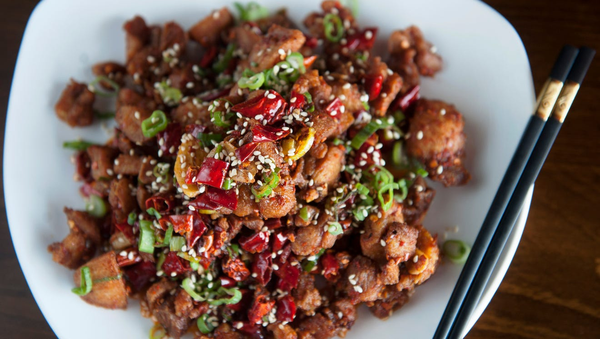

Home
Szechuan Chicken

Description
A simple, quick recipe for Szechuan-style chicken with basic ingredients. This is usually served over white rice.
Ingredients
- 4 boneless skinless chicken breasts, cut into cubes
- 3 tablespoons cornstarch
- 1 tablespoon vegetable oil
- 4 cloves garlic, minced
- 5 tablespoons low-sodium soy sauce
- 1 1/2 tablespoons white wine vinegar
- 1/4 cup water
- 1 teaspoon white sugar
- 3 green onions, sliced diagonally into 1/2 inch pieces
- 1/8 teaspoon cayenne pepper, or to taste
Steps
- Place the chicken and cornstarch into a bag or bowl, and toss to coat.
- Heat oil in a wok or large skillet over medium-high heat.
- Fry the chicken pieces and garlic, stirring constantly until lightly browned.
- Stir in the soy sauce, vinegar, sugar and water.
- Cover, and cook until the chicken pieces are no longer pink inside, 3 to 5 minutes.
- Stir in the green onion, and cayenne pepper, cook uncovered for about 2 more minutes.
- Serve over white rice.
- Enjoy!